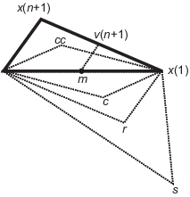

Optimizing Nonlinear Functions
Minimizing Functions of One Variable
Given a mathematical function of a single variable, you can use the fminbnd function to find a local minimizer of the function in a given interval. For example, consider the humps.m function, which is provided with MATLAB®. The following figure shows the graph of humps.
x = -1:.01:2; y = humps(x); plot(x,y) xlabel('x') ylabel('humps(x)') grid on

To find the minimum of the humps function in the range (0.3,1), use
x = fminbnd(@humps,0.3,1)
x = 0.6370
You can see details of the solution process by using optimset to create options with the Display option set to 'iter'. Pass the resulting options to fminbnd.
options = optimset('Display','iter'); x = fminbnd(@humps,0.3,1,options)
Func-count x f(x) Procedure
1 0.567376 12.9098 initial
2 0.732624 13.7746 golden
3 0.465248 25.1714 golden
4 0.644416 11.2693 parabolic
5 0.6413 11.2583 parabolic
6 0.637618 11.2529 parabolic
7 0.636985 11.2528 parabolic
8 0.637019 11.2528 parabolic
9 0.637052 11.2528 parabolic
Optimization terminated:
the current x satisfies the termination criteria using OPTIONS.TolX of 1.000000e-04
x = 0.6370
The iterative display shows the current value of x and the function value at f(x) each time a function evaluation occurs. For fminbnd, one function evaluation corresponds to one iteration of the algorithm. The last column shows the procedure fminbnd uses at each iteration, a golden section search or a parabolic interpolation. For details, see Optimization Solver Iterative Display.
Note: Optimization solvers apply to real-valued functions. Complex values cannot be optimized, except for a real-valued function of the complex values, such as the norm.
Minimizing Functions of Several Variables
The fminsearch function
is similar to fminbnd except that it handles functions
of many variables. Specify a starting vector x0 rather
than a starting interval. fminsearch attempts to
return a vector x that is a local minimizer of
the mathematical function near this starting vector.
To try fminsearch, create a function three_var of
three variables, x, y, and z.
function b = three_var(v)
x = v(1);
y = v(2);
z = v(3);
b = x.^2 + 2.5*sin(y) - z^2*x^2*y^2;Now find a minimum for this function using x = -0.6, y
= -1.2, and z = 0.135 as the starting values.
v = [-0.6,-1.2,0.135]; a = fminsearch(@three_var,v)
a =
0.0000 -1.5708 0.1803Note
Optimization solvers apply to real-valued functions. Complex values cannot be optimized, except for a real-valued function of the complex values, such as the norm.
Maximizing Functions
The fminbnd and fminsearch solvers
attempt to minimize an objective function. If you have a maximization
problem, that is, a problem of the form
then define g(x) = –f(x), and minimize g.
For example, to find the maximum of tan(cos(x)) near x = 5, evaluate:
[x fval] = fminbnd(@(x)-tan(cos(x)),3,8)
x =
6.2832
fval =
-1.5574The maximum is 1.5574 (the negative of the reported fval), and occurs at x = 6.2832. This answer is correct since, to five digits, the maximum is tan(1) = 1.5574, which occurs at x = 2π = 6.2832.
fminsearch Algorithm
fminsearch uses the Nelder-Mead simplex
algorithm as described in Lagarias et al. [1]. This algorithm uses a simplex of n + 1 points for n-dimensional
vectors x. The algorithm first makes a simplex
around the initial guess x0 by
adding 5% of each component x0(i)
to x0. The algorithm uses
these n vectors as elements of the simplex in addition
to x0. (The algorithm uses
0.00025 as component i if x0(i) = 0.) Then, the
algorithm modifies the simplex repeatedly according to the following
procedure.
Note
The keywords for the fminsearch iterative
display appear in bold after the
description of the step.
Let x(i) denote the list of points in the current simplex, i = 1,...,n + 1.
Order the points in the simplex from lowest function value f(x(1)) to highest f(x(n + 1)). At each step in the iteration, the algorithm discards the current worst point x(n + 1), and accepts another point into the simplex. [Or, in the case of step 7 below, it changes all n points with values above f(x(1))].
Generate the reflected point
r = 2m – x(n + 1), (1) where
m = Σx(i)/n, i = 1...n, (2) and calculate f(r).
If f(x(1)) ≤ f(r) < f(x(n)), accept r and terminate this iteration. Reflect
If f(r) < f(x(1)), calculate the expansion point s
s = m + 2(m – x(n + 1)), (3) and calculate f(s).
If f(s) < f(r), accept s and terminate the iteration. Expand
Otherwise, accept r and terminate the iteration. Reflect
If f(r) ≥ f(x(n)), perform a contraction between m and eitherx(n + 1) or r, depending on which has the lower objective function value.
If f(r) < f(x(n + 1)) (that is, r is better than x(n + 1)), calculate
c = m + (r – m)/2 (4) and calculate f(c). If f(c) < f(r), accept c and terminate the iteration. Contract outside
Otherwise, continue with Step 7 (Shrink).
If f(r) ≥ f(x(n + 1)), calculate
cc = m + (x(n + 1) – m)/2 (5) and calculate f(cc). If f(cc) < f(x(n + 1)), accept cc and terminate the iteration. Contract inside
Otherwise, continue with Step 7 (Shrink).
Calculate the n points
v(i) = x(1) + (x(i) – x(1))/2 (6) and calculate f(v(i)), i = 2,...,n + 1. The simplex at the next iteration is x(1), v(2),...,v(n + 1). Shrink
The following figure shows the points that fminsearch can
calculate in the procedure, along with each possible new simplex.
The original simplex has a bold outline. The iterations proceed until
they meet a stopping criterion.

Reference
[1] Lagarias, J. C., J. A. Reeds, M. H. Wright, and P. E. Wright. “Convergence Properties of the Nelder-Mead Simplex Method in Low Dimensions.” SIAM Journal of Optimization, Vol. 9, Number 1, 1998, pp. 112–147.
See Also
Topics
- Optimization Troubleshooting and Tips
- Nonlinear Optimization (Optimization Toolbox)
- Curve Fitting via Optimization